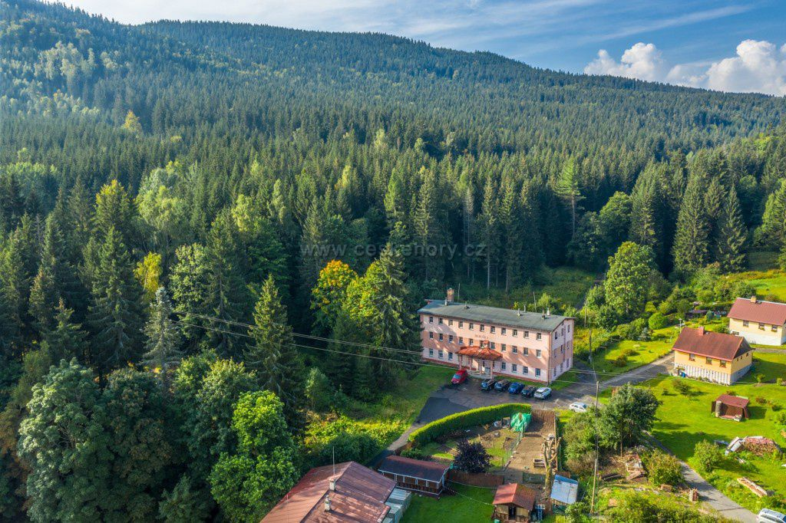

Kořenov · Jizerské hory
Klidné ubytování v Jizerských horách
Útulný apartmán 1+1 v přízemí domu v Kořenově. Běžecké tratě jsou necelý kilometr daleko, cyklostezka 100 metrů od domu.
- 32 m²1+1, přízemí
- až 4hosté
- Zdarmaparkování u domu
- Wi-Fia TV
- Po domluvědomácí mazlíčci
O apartmánu
Zázemí pro dovolenou na horách i na kole
Apartmán Mili je v přízemí domu Beruška v Kořenově. Tvoří ho obývací a ložnicový pokoj, kuchyně s jídelním stolem, koupelna se sprchovým koutem a WC a předsíň.
Hodí se pro páry i rodiny s dětmi. Vítáni jsou cyklisté, lyžaři a pěší turisté. Před domem je parkování zdarma, ohniště a sušák na obuv se hodí po návratu z tratě.
Spaní
- 1× manželská postel
- 1× samostatné lůžko
- 1× rozkládací pohovka
- 1× přistýlka
Apartmán je určen pro 4 hosty. Lůžkoviny jsou k dispozici.
Dispozice
- Předsíň
- Obývací a ložnicový pokoj
- Kuchyně s jídelním stolem
- Koupelna se sprchovým koutem a WC
Fotogalerie
Podívejte se dovnitř
Kliknutím fotku zvětšíte.
Vybavení
Co najdete na místě
Kuchyně
- Sporák s troubou
- Mikrovlnná trouba
- Myčka nádobí
- Lednice
- Rychlovarná konvice
- Kompletní nádobí
Koupelna
- Sprchový kout a WC
- Fén
- Ručníky
Dům a okolí
- Wi-Fi a TV
- Lůžkoviny
- Sušák na obuv
- Parkování zdarma přímo u domu
- Ohniště
- Domácí mazlíčci po domluvě
Lokalita
Všechno důležité nablízku
Kořenov leží v Jizerských horách, nedaleko Harrachova. Vzdálenosti jsou orientační.

Od apartmánu
- Cyklostezka
- 100 m
- Běžecké tratě
- 1 km
- Lyžařské vleky
- 1,4 km
- Obchod COOP
- 900 m
- Nejbližší restaurace
- 900 m
- Autobusová zastávka
- 300 m
- Železniční stanice Kořenov
- 2 km
Výlety v okolí
- Harrachov
- 5 km
- Jizerka
- 6 km
- Lyžařský areál Rejdice
- 7 km
- Lyžařský areál Rokytnice nad Jizerou
- 11 km
Jak se k nám dostanete
- AutemPo silnici č. 10 směrem na Harrachov, pak 300 m po udržované cestě k domu. Parkování je přímo před domem.
- AutobusemPřímý spoj z Prahy (Černý Most) staví 300 m od domu.
- VlakemŽelezniční stanice Kořenov je 2 km od apartmánu.
Roční období
Zima
Běžecké tratě jsou asi kilometr od domu, lyžařské vleky 1,4 km. Větší areály najdete v Rejdicích a v Rokytnici nad Jizerou.
Léto
Cyklostezka vede 100 metrů od domu. Na kole nebo pěšky se dostanete do Harrachova i na Jizerku.
Rezervace
Vyberte si termín
Volné termíny, ceny a rezervaci najdete v našem rezervačním systému.
Odkaz na rezervační systém bude doplněn.
Kontakt
Máte dotaz?
Rádi poradíme s termínem, příjezdem nebo pobytem se psem.
- Adresa
- Kořenov 659, Kořenov
- GPS
- 50.761286 N, 15.384355 E
Mapa
Mapu nenačítáme z cizích serverů, otevře se až po kliknutí.